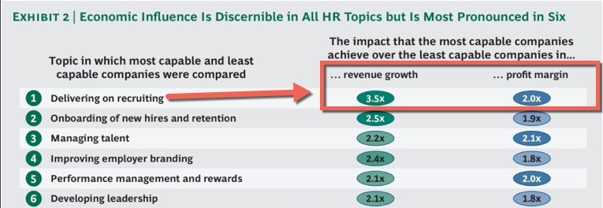
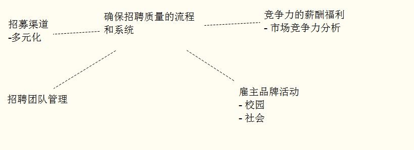

我今天讲的不是什么新鲜的东西，它们都是基本的东西，都要把握好其中的基本面才能得到好的效果。
以下来自我的实践经历。
增进营收的招聘
当有人问我们，你通常会在什么时候知道你已经认识某一事物了呢？我们的答复是：当我们能够把我们所说的转化为行动的时候
对企业来讲，转化为行动最有吸引力的是什么呢? 增进营收是其中的一个。
招聘能给企业带来收入
很多人有这个疑问，招聘能带来利润吗？招聘团队也可以给企业贡献利润吗？
招聘不过是花钱，市场不好的情况下，我还希望不花钱，少招聘人。
是的，大家都很关心成本。那么如果招聘过来的人给企业带来了 10%-20% 的业务增长呢，你会在意招聘经费花的多一些吗？
招聘的效果其实最终会反映在企业的收入上。 那么那些表现好的公司他们是如何关注的呢
来自BCG的一份报告WFPMA - From Capability to Profitability: Realizing the Value of People Management, 2012 显示
人力资源各功能中，招聘功能对企业商业的影响最大。

** 5.5倍， 如此大的影响，我们如何行动呢？**
A . 减少招聘推延，增加收入
我们再来看看常见的一种情况，当人员配置影响了业务。比如，空缺销售精英的情况， 如果不能及时补充，业绩如何：
一种情况，销售精英离开团队，导致销售额度下降，甚至客户流失；
另一种情况，企业一直招聘不到好的销售，业务无法扩大；
这时候他们会更关注哪些人力资源策略呢？
我会首先关注招聘策略！！
选择怎样的招聘策略呢，收入导向的招聘策略是从增进营收的招聘开始的。
什么样的招聘策略能增进我们的营收呢？
B . 采取以下招聘策略，增进企业收入
1. 优先利润产出部门、岗位的招聘；
最有效同时也是最小成本的策略就是把握优先次序；
招聘人员需要经营团队一起辨识和优先考虑那些为企业增进营收最多的部门，岗位及员工；哪些不直接产生营收但与营收切实攸关的岗位（比如研发和客服）；
比如问产出利润的员工，哪些流程和岗位帮助了他们做出了这样的利润产出；
设定你的工作优先级，还需要确保人力资源和最好的招聘人员也配置在这些优先领域；
比如：招聘的排序，业务部门和研发部门的招聘优先 ？还是行政可持续发展部门优先呢；
很明显，如果在座的各位都是业务驱动的公司，那么首选的当然是业务部的招聘。
在我先前就职的林业公司，我优先安排的是生产相关岗位——木头是卖方市场，不愁销路 有产量就有收入。
比如采伐团队的招聘配置就是优先！
以当时进口采伐机械专项项目——8个培训班次 ，70多名新机手的招聘（1 批次招聘的目标是 8 人）为例，招聘每个月为公司增进了几百万元的产量。
我对招聘策略作调整的效果
a) 12 年有 2 个招聘经理 + 1 个招聘助理负责该项目，14 年到我接手后， 由我 1 人负责；
b) 招聘周期从2 个月完成 --> 1 个月--> 2 周完成；
c) 产量收入至少每个月增加： 30 天X15 万/天=450 万元 ；
数字估算过程如下
正常作业的情况下，一个机器 24 小时，300 方的作业量，机器空一天的损失是 100 方 x 3 个班次 X 700 元 = 210，000 元；
新机器到来的时候，确保新机手已经完成培训，能马上开始投入工作。
如果空缺1个人那就是 一天 6-7 万元的损失！ 一个招聘批次 8-10 个人，那 1 天就是 60-70 万的业务影响；
针对新人不可能一开始就正常作业，我们把他们的产出减半。当机器到港后，招聘到岗晚一天，一天就有 20-30-40 万的产量损失。
那么这次策略的调整带来的收益有多少呢 按产量 至少每个月 30 天 X 15 万=450万元
我再简单讲 2 点当时的实践——策略的调整
这批蓝领的招聘，淘汰率 5:1 。幸好我的开放式招聘的实践帮了大忙！
- 首先从招聘流程入手，和采伐部门讨论他们对新机械操作手的招聘需求（特别是机器到港口的时间），评估和确定了每一培训班次的入职时间，确保在该时间节点完成该班次 8 位新人入职；
- 并定制流程节点，加快招聘速度：比如：在新招聘需求的审批，文件提交走的过程中，提前展开招聘方案并大力地实施（广告发布、 甄选、入职安排 ）；
- 当然还有招募的方式和面试的方式的诸多调整，比如带候选人到林地参观……具体需另起一文交流；
小结一下
我们看到清晰地辨识招聘的优先次序，虽然简单，不过在实际的过程中，很多人其实会忘掉这个基本的动作。
一个窍门：批准招聘的时候不妨假想：如果公司要冻结招聘，那么我手上哪几个可以砍掉？
哪些必须要继续执行？
心理就有数了，而不是单纯依招聘难度来决定，只挑容易达成的目标来做。（判断岗位难度的因素：我也简单提下——岗位核心要求、人才分布、薪资匹配度、面试官、业务模式——我找下一个时间再分享 ：招聘难度以及限制人员编制）
2. 对准竞争对手，从对手公司挖关键岗位
从你的竞争对手那里获取人才
把人才从竞争对手那里挖走有高的回报。因为一旦你成功地把人才从竞争对手那里挖走，会带来此消彼长的效果——你的收入将增进而他们的将减少。
开始瞄准那些给竞争公司增进收入的人，比如挖走他们最好销售经理或者特别好的销售骨干；你能吸引到这些人才，其他的人才也会跟进趋势，慕名而来。
高影响性的人才还包括 创新者，规则制定者，技术先驱；
比如，我们从同业公司挖来一个关键岗位的道路专家——之后它们公司道路经理空缺了1年；
同业公司损失的仅仅是一个道路经理？
3. 保留那些利润产出相关人员
核心人员要离开一个公司并不一定是薪资，跟他们进行面谈，是什么因素导致他们做出这样的决定了呢？
要有一套机制来给员工健康地和管理者对话。
最好的实践是在员工起念头的时候，管理者就能关注到。有办法吗，有，比如：简单的最常见的就是平时花时间和手下多聊聊。
为了吸引和留住优秀人才，许多明智的领导人做对了一件很简单的事：他们询问员工的感受。当他们问这个问题时，就能得到宝贵的信息，这有助于留住最好的人才并让生产率达到最优。
哈佛商业评论的这篇文章还提到：
游戏零售商“游戏驿站”（GameStop）的人力资源主管丹尼尔·帕伦特（Daniel Parent）正属于这类主管。他知道了解团队状况，他的日程表上经常出现一件待办事项：“问问员工工作是否开心，以及我该怎么做才能让他们更开心。”根据多年经验，丹尼尔发现，只要询问团队成员以上两个问题，就能让员工明白他是支持他们的。而且，丹尼尔还能知道员工真正面临的问题并为他们指明方向。
4. 外部雇佣能为企业增进收入的人才
外部雇员会带来他们关于创收的想法。
关注你的雇主品牌和服务于增进营收的岗位的招聘流程。
- 重新设计流程以辨别、吸引、和雇佣能为企业增进营收的人员，并加快其入职。
比如：
销售经理，在以下环节在线测试\面试安排、薪资谈判、入职的处理，。。。。
新加入的销售经理，在市场方面有特别的才能。
他带领业务团队，重新梳理业务市场，独特的市场调查和谈判能力，每方提升上百元；
一年多时间，为企业挽回/新增上千万的营收；
做法之一：
他找到了市场调查获得真正的价格数据——掌握实时的的市场信息，形成谈判的优势。
- 还有：一个工作岗位的责任水平、自主程度以及控制范围都与提高雇员满意度有关。 以上策略的实施离不开好的招聘人员实施
如何分辨出类拔萃的招聘人员？
谁来实施呢，你需要好的招聘专家
出类拔萃的招聘人员和一般的招聘人员最大的不同是什么呢？
我们不看特质，我们来看他们的行为。毕竟我们是基于行为科学的招聘。
好的招聘人员与一般的有什么不同呢？我们先来看一般的招聘；
一般的招聘人员
他们对候选人的质量和录用的质量只有很小的影响力
- 其实是个挂名，空有其名的招聘；
- 大部分时候，他们做很多的日常行政工作；
一般的招聘人员的行为
我之前一个课件提过，招聘要从被动招聘走向主动招聘，招聘被动人才。被动人才是哪种已经在好公司或者好岗位上的优才，一般不主动刷新简历，而一般招聘人员的招聘是以守株待兔的方式来进行。守旧僵化不开放。比如
- 他们大部分精力都放在等待上，等着别人投简历；
- 不使用新方法，使用千篇一律的方法获取、筛选、面试候选人 ；
- 一成不变僵化的招聘流程；
也不往外看，收集对手公司的招聘策略 、活动；
他们会更加关注成本控制、减少，而不是招聘质量；开拓不出有力的招聘渠道；
他们只是渠道供应商管理员—让外部供应商帮他们
他们花费大量的时间用于写、发布招聘广告等待收割主动投递者
他们花大量的时间为用人部门经理和候选人组织面试
他们不擅长私人定制offer
不擅长背景调查，花了时间得不到有效参考信息
他们花费大量时间参加为主动投递者准备的招聘会，这些简历也许都能从网络获得
候选人入职后，他们不会跟进，调查招聘质量和招聘流程是否可以改进
与之相反，出类拔萃的招聘人员用不一样的方式，开放地招聘，主动地与候选人建立联系
出类拔萃的招聘人员
- 主动搜寻人才
- 鼓动人才应聘
- 会卖岗位和公司
出类拔萃的招聘人员都做什么呢
我们现在看下他们主要的行为表现：
- 他们快速、持续、自我驱动地学习
- 他们深入理解企业业务
- 他们关注招聘质量，完成招聘后跟踪分析入职表现和满意度
- 他们能有效说服用人部门面试官，并有效合作
- 他们善于把握招聘优先次序，关注重点岗位和候选人
- 他们优先搜寻被动求职者
- 他们聚焦于与候选人建立信任关系
- 他们主动建立个人的人才管道
- 他们有特别的人才来源、渠道
是时候重新考察你的招聘人员了！ 比如下图的招聘人员就已经关注到其中的几个方面了，为此值得高兴。

总结：习得的诀窍在哪呢？
我们回过头来看，这些行为的不同，如何习得？
在看一遍前面提到的行动科学对理解的阐释：
当有人问我们，你通常会在什么时候知道你已经认识某一事物了呢？
我们的答复是：当我们能够把我们所说的转化为行动的时候
大白话就是不走阻力最小的那条路。
出类拔萃的招聘人员正是不走阻力最小的路的人。
正如以上所见的行为，都不是容易的事，正是这些让企业的收入一步步与众不同。
欢迎联系 Arvin Yu , 邮箱：yuyandong@outlook.com
或长按以下二维码关注 公众号： 稻田无忧

本作品采用 知识共享署名-非商业性使用-禁止演绎 3.0 Unported许可协议 进行许可。